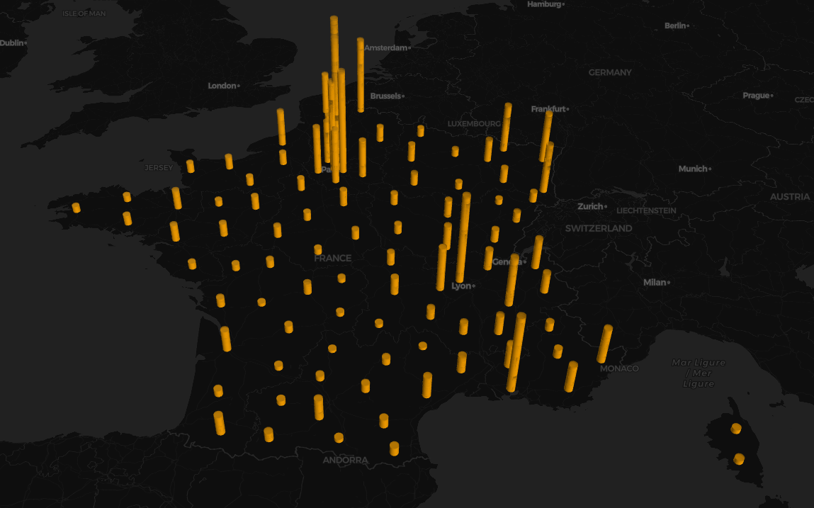

3D maps¶
Patient transfers¶
You probably heard that the intense pressure on the health-care system lead some hospitals to transfer their patients. The transfer_map function is a way to visualize these transfers.
from vizcovidfr.maps import maps
maps.transfer_map(color_d=[234, 31, 44, 80], color_a=[30, 190, 241, 80])
NB The map below is just a static image, and therefore, is not interactive. You can simply copy-paste the code block above to generate the interactive version. It should work or your side.
|

hospitalization, resuscitation, deaths¶
One way to compare these criterion between French departments and regions is to use the viz3Dmap function with the desired arguments, like so:
from vizcovidfr.maps import maps
maps.viz3Dmap(granularity='departement', criterion='hospitalises',
file_path='', color=[255, 165, 0, 80])
NB The map below is just a static image, and therefore, is not interactive. You can simply copy-paste the code block above to generate the interactive version. It should work or your side.
 |